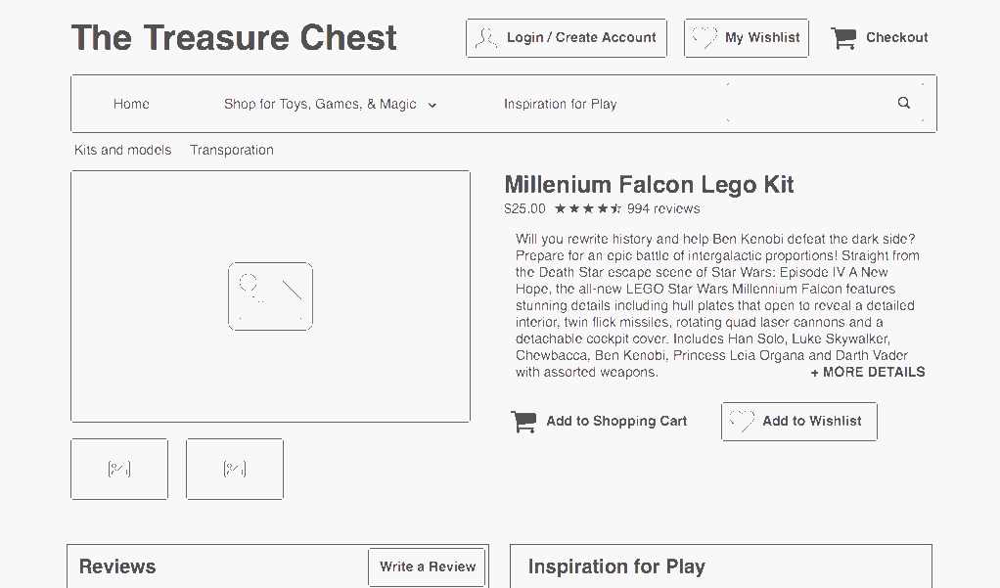

Find a toy and make sure it is cool. By shopping at Treasure Chest, Jason can be guided to the right toy for his daughter and, after accessing reviews, can feel confident about his choice.

Buy and give the toy.

Spend time together playing. With access to many ideas for how to play, he can spend time with his daughter creating memories and growing their relationship. And the increased engagement with Treasure Chest online ensures the social shopping experience that is so important to Jason by building a relationship and bringing users back to the website to review their purchases.